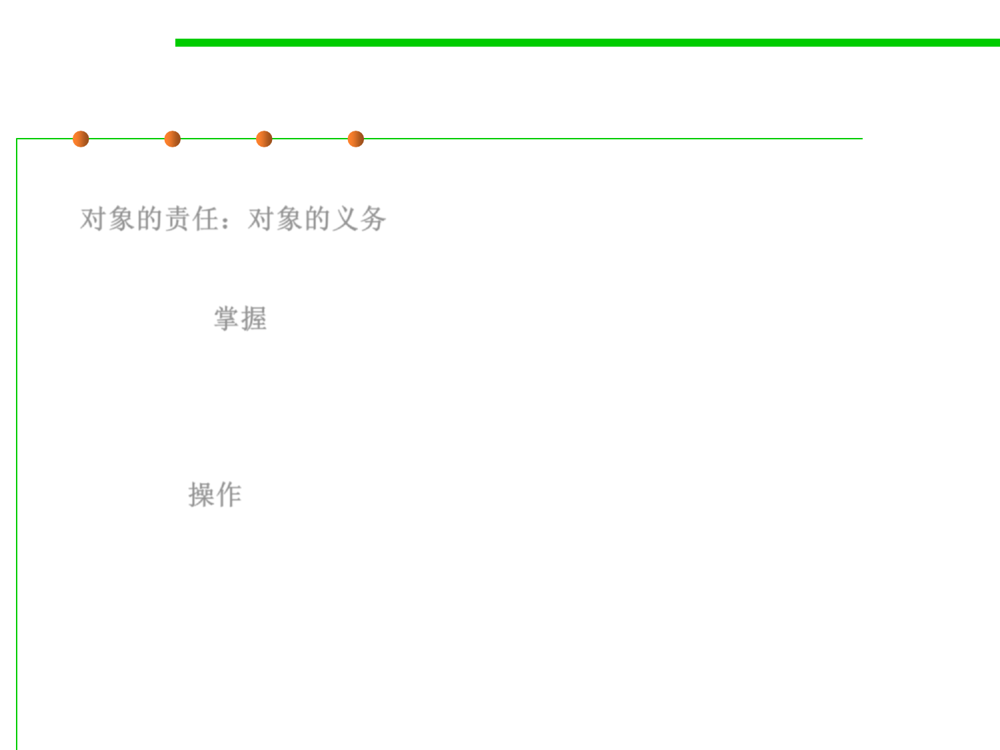

6.1 Metrics and Construction Principles for Maintainability
What’s responsibility
▪ Responsibility of an object: related to the obligations of an object
对象的责任：对象的义务
▪ Two kinds of responsibility of an object
▪ Knowing: 掌握
– Knowing about private encapsulated data
– Knowing about related objects
– Knowing about things it can derive or calculate
▪ Doing: 操作
– Doing something itself, such as creating an object or doing a calculation
– Initiating action in other objects
– Controlling and coordinating activities in other objects.